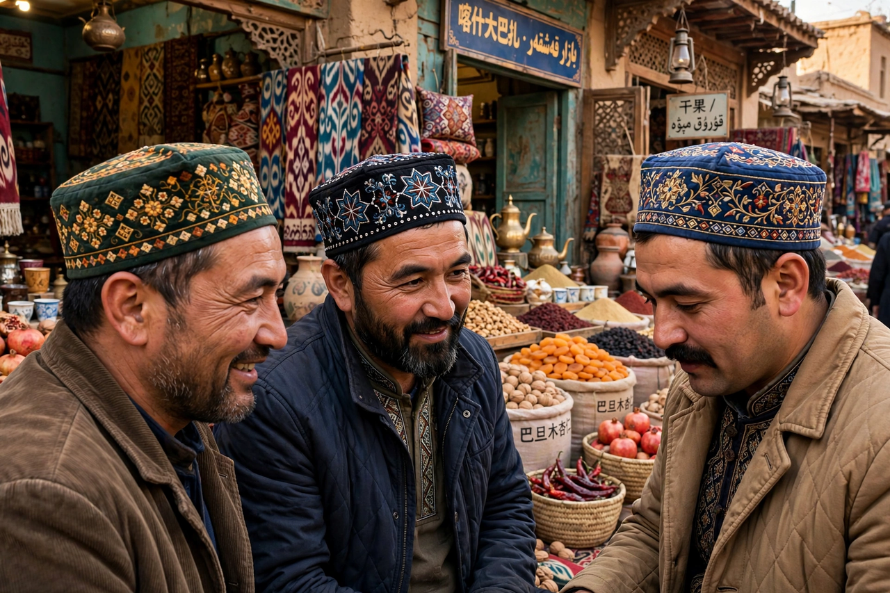

| Total population | approx. 11.8 million in China (2020 census); large diaspora |
|---|---|
| Regions | Xinjiang, China; Kazakhstan, Turkey, Central Asia |
| Languages | Uyghur; Mandarin Chinese |
| Religion | Predominantly Sunni Islam |
| Related groups | Other Turkic peoples |
The Uyghurs are a Turkic ethnic group native to the Xinjiang Uygur Autonomous Region in northwestern China. They are one of China's 55 officially recognised ethnic minorities. The Uyghurs are predominantly Muslim and speak the Uyghur language, a Turkic language written in a modified Arabic script.
The ancestors of the Uyghurs were among the Turkic peoples of the Eurasian steppe. The Uyghur Khaganate, founded in 744, ruled a large empire centred on the Orkhon valley in present-day Mongolia before collapsing in 840, after which Uyghur groups migrated south into the Tarim Basin oases such as Turpan and Kashgar. Over centuries the oasis populations adopted Islam, a process substantially complete by the sixteenth century.
The region came under Qing dynasty rule in the eighteenth century and was organised as Xinjiang ("New Frontier") in 1884. Brief periods of de facto independence occurred in the twentieth century, notably the First and Second East Turkestan Republics. Since 1949 the region has been governed as an autonomous region of the People's Republic of China.
Uyghur culture centres on oasis agriculture and trade along the former Silk Road. Traditional foods include laghman (hand-pulled noodles), polo (rice pilaf), kebabs and naan bread. Music is marked by the muqam, a suite of melodies, poetry and dance recognised by UNESCO as intangible cultural heritage. Men traditionally wear the doppa, a square embroidered skullcap.
Since the mid-2010s, United Nations experts, governments and human-rights organisations have reported large-scale detention of Uyghurs and other Turkic Muslims in Xinjiang, along with intensive surveillance and restrictions on religious practice. The Chinese government describes the facilities as vocational education and training centres and denies abuses. The situation has been a major source of international controversy, and several legislatures have passed resolutions characterising the treatment of Uyghurs as crimes against humanity or genocide.
Significant Uyghur communities live in Kazakhstan, Kyrgyzstan, Turkey and Western countries. Exile organisations, including the World Uyghur Congress, advocate for Uyghur rights internationally.